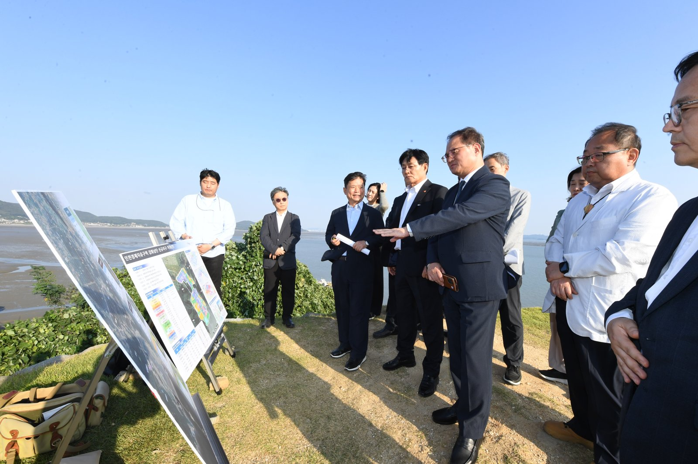
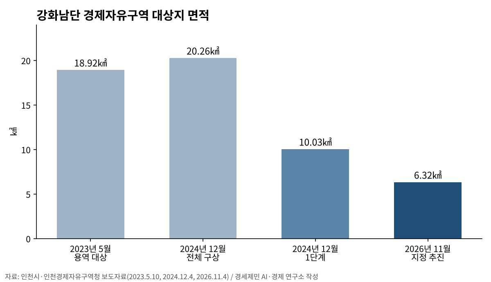
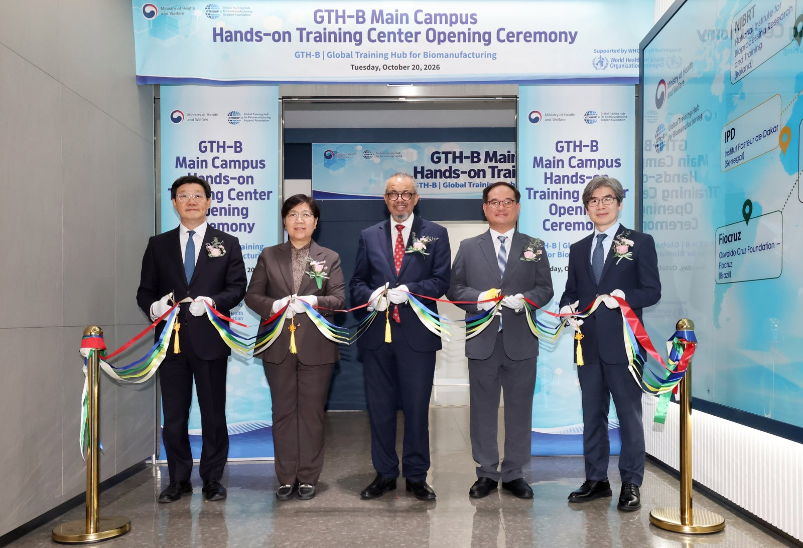

강화남단 경제자유구역, 지정 요청 11개월째…2차 발전계획에 담는다
길상·화도면 6.32㎢, 2035년까지 3조1002억 원
대상지는 2023년 18.92㎢에서 3분의 1로 줄어
AI경제저널=김갑봉 기자 | 인천 강화남단 경제자유구역 지정이 1년 가까이 정부 심사에 머물러 있다. 인천경제자유구역청은 이 사업을 「제2차 인천경제자유구역 발전계획」에 담아 12월 산업통상부에 내겠다고 4일 밝혔다.

대상지는 강화군 길상면·화도면 일원 6.32㎢다. 인천경제청은 2035년까지 약 3조1천억 원을 들여 그린·블루바이오와 피지컬AI, 복합관광 거점을 만든다는 구상이다.
산업부 위원회 보고 뒤 11개월
산업통상부는 2025년 12월 15일 제146차 경제자유구역위원회에 강화남단지구 추가 지정 요청을 보고했다. 사업기간은 2025~2035년이고 총사업비는 3조1002억 원이다. 시행예정자는 인천시다.
경제자유구역 지정 절차는 이렇다. 시·도지사가 개발계획을 만들어 산업부에 지정을 요청한다. 산업부는 이를 위원회에 보고하고 관계부처 협의와 전문가 평가를 거친다. 지정 여부는 위원회 심의·의결로 정한다.
강화남단은 아직 마지막 심의·의결에 이르지 못했다. 인천경제청은 4일 자료에서도 이 사업을 "신규 지정을 추진하는" 사업으로 적었다.
'2025년 하반기 지정' 목표는 지나
인천시는 2024년 12월 4일 "2025년 내 경제자유구역 개발계획 승인 및 구역 지정이 목표"라고 밝혔다. 인천경제청은 2025년 6월 9일 그달 말 지정 신청서를 낸다고 했다.
당시 인천경제청은 계획대로라면 그해 하반기에 정부가 개발계획 승인과 구역 지정을 고시할 수 있다고 설명했다. 그 시점은 이미 지났다.
18.92㎢에서 6.32㎢로

대상지는 3년 새 크게 줄었다. 인천경제청은 2023년 5월 10일 강화 남단 18.92㎢를 경제자유구역 확대 용역 대상으로 정했다. 수도권매립지 16.85㎢를 합치면 35.77㎢였다.
2024년 12월 계획에서 강화 남단은 화도·길상·양도면 20.26㎢(약 600만 평)였다. 청라국제도시(17.80㎢)보다 넓다. 인천경제청은 1단계 10.03㎢부터 지정을 추진한다고 했다.
2025년 6월 지정 신청안에서 대상지는 화도·길상면 6.32㎢로 줄었다. 2023년 용역 대상의 33.4%, 2024년 1단계의 63.0%다. 양도면은 빠졌다.
그린바이오에서 피지컬AI로
산업 구상도 바뀌었다. 2024년 계획은 그린바이오가 중심이었다. 그린바이오 파운드리와 해양치유지구, 친환경 웰니스 주거단지를 담았다. 첨단 화훼단지와 스마트팜, 종자연구센터도 넣었다.
2025년 6월 안은 레드·그린·블루·화이트 바이오를 아우르는 통합형 K-바이오 클러스터를 내걸었다. 스마트 팩토리와 로봇, AI, 모빌리티 제조 클러스터와 체험형 관광도 더했다.
산업부에 보고된 핵심 유치업종은 바이오와 피지컬AI, 복합관광이다. 총사업비는 2025년 6월 약 3조2000억 원으로 추정했다가 12월 보고 때 3조1002억 원이 됐다.
인천시는 4일 국회에서 연 인천지역 국회의원 예산정책협의회에서도 「강화 평화·경제 국가거점 조성」을 주요 현안으로 올렸다.
송도는 바이오, 청라는 콘텐츠

인천경제청은 기존 세 지구의 산업 기반도 함께 키운다. 청라에서는 영상문화복합단지 솜 시티(SOM City)가 다시 속도를 낸다. 10월 19일 제149차 경제자유구역위원회가 개발계획 변경안을 원안 가결했다.
솜 시티는 18만8282㎡ 부지에 실내외 스튜디오와 오픈세트, 미디어센터를 짓는다. 콘텐츠 지식재산권(IP)을 활용한 문화·관광시설도 모은다. 준공 목표는 2031년 12월로 조정됐다.
송도에서는 9월 30일 연세대 국제캠퍼스에서 K-바이오 랩허브(2029년 준공 목표)가 착공했다. 10월 20일에는 세계보건기구(WHO) 글로벌 바이오 인력양성 허브 실습교육장(약 2492㎡)이 문을 열었다.
인천경제청은 한국은행 인천본부 자료를 들어 2024년 인천 제약·바이오 생산액이 7조7천억 원이라고 밝혔다. 국내 생산액의 61.8%다. 영종하늘도시 3단계 유보지 일부는 바이오특화단지로 개발할 계획이다.
인천경제자유구역 입주 사업체는 2024년 말 3860개다. 종사자는 12만2832명, 매출액은 113조2602억 원이다. 외국인직접투자 누적 신고액은 2025년 말 170억 달러다.
김종철 청장은 9월 18일 취임식에서 "이제 IFEZ는 개발 중심의 투자유치를 넘어, 국가 산업전략과 글로벌 공급망의 변화에 부합하는 전략적 투자유치로 전환하여 도약해야 할 때"라고 말했다.
참고문헌
- "인천경제자유구역 강화남단지구 지정신청 접수", 산업통상부(경제자유구역기획단 정책기획팀), 2025.12.15., https://www.korea.kr/briefing/pressReleaseView.do?newsId=156735168
- "인천경제청, K-콘텐츠·바이오 중심 미래산업 기반 확대", 인천경제자유구역청(미디어문화과), 2026.11.4., 보도자료
- "인천시-인천지역 국회의원 예산정책협의회 개최", 인천시(정책기획관), 2026.11.4., https://www.incheon.go.kr/IC010205/view?repSeq=DOM_0000000015888351
- "인천경제청, SOM CITY 개발계획 변경… K-콘텐츠 복합 클러스터 조성 탄력", 인천시(서비스산업유치과), 2026.10.20., https://www.incheon.go.kr/IC010205/view?repSeq=DOM_0000000015794845
- "인천경제청, 강화남단 경제자유구역 지정 이달 말 신청", 인천경제자유구역청(영종청라계획과), 2025.6.9., https://www.ifez.go.kr/main/pst/view.do?pst_id=noti03&pst_sn=668032
- "강화남단 경제자유구역, 산업부 자문회의 추진…2025년 말 경자구역 지정 목표", 인천시(영종청라계획과), 2024.12.4., https://www.incheon.go.kr/IC010205/view?repSeq=DOM_0000000011315721
- "강화 남단·수도권매립지 일대 경제자유구역 지정 용역 7월 착수", 인천시(영종청라계획과), 2023.5.10., https://www.incheon.go.kr/IC010205/view?repSeq=DOM_0000000007514417
[사진 출처]
- [사진1·2] 인천경제자유구역청 보도자료 「인천경제청, K-콘텐츠·바이오 중심 미래산업 기반 확대」 붙임 사진, 2026.11.4.
관련기사
- 인천시 "국비 1306억 더"…노동감독관 인건비·인천e음·M버스
- 강화남단 경제자유구역, 지정 요청 11개월째…2차 발전계획에 담는다
- 박인서 인천항만공사 사장 취임…"미해결 현안 푸는 해결사 되겠다"
- 인천시, 천원택배 운영·배송체계 일원화…무인 집화·간편결제 도입
저작권자 © AI경제저널 무단전재 및 재배포, AI학습 및 활용 금지